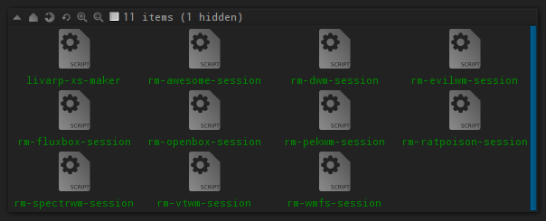

lang fr|gb

session managment
add, delete, uninstall, hide sessions, manual method, selective or full method, here are some tools to manage your sessions in livarp.
manual method
note: if you want a livarp single-session without delete/uninstall anything, just edit your ~/.xinitrc as explained on the dedicated page.
if you want to add or delete a session "manually", you have to install or uninstall packages and configuration files as well as add or delete the entry in the session-selector (/usr/local/bin/dmenu-start.sh ).
note that wms in livarp are very light and don't take so much space on your disk.
- to hide a session, simply edit the session-selector as root:
# vim /usr/local/bin/dmenu-start.sh
then delete uneeded entries in the "session list" section as well as in the "session launchers" section
- to add a session, edit the session-selector as above and add your session to the "session list" section as well as in the "session launchers" section and update the numbers of the list.
here an example with a snapwm session:
original dmenu-start.sh
#!/bin/bash
# a simple session-selector
###########################
# session list
# ------------
choice=`echo -e "01: vtwm\n02: dwm\n03: ratpoison\n04: wmfs\n05: dwm_reloaded\n06: spectrwm\n07: evilwm\n08: openbox\n09: pekwm\n10: awesome\n11: fluxbox\n12: edit startup scripts\n13: shutdown" | dmenu -fn "snap" -nb "#222222" -nf "#7D7D7D" -sb "#005885" -sf "#D7D7D7" -p "select a session:" | cut -d ':' -f 1`
# session launchers
# -----------------
case $choice in
01) exec $HOME/bin/start/vtwm_start.sh ;;
02) exec /usr/bin/dwm ;;
03) exec $HOME/bin/start/ratpoison_start.sh ;;
04) exec $HOME/bin/start/wmfs_start.sh ;;
05) exec $HOME/bin/start/dwm_start.sh ;;
06) exec $HOME/bin/start/spectrwm_start.sh ;;
07) exec $HOME/bin/start/evilwm_start.sh ;;
08) exec /usr/bin/openbox-session ;;
09) exec $HOME/bin/start/pekwm_start.sh ;;
10) exec $HOME/bin/start/awesome_start.sh ;;
11) exec $HOME/bin/start/fluxbox_start.sh ;;
12) geany -s bin/start/*_start.sh .config/openbox/autostart .xinitrc; dmenu-start.sh ;;
13) sudo shutdown -h now ;;
*) dmenu-start.sh ;;
esac
exit 0
the modified script with "snapwm" between "dwm_reloaded" and "spectrwm"
#!/bin/bash
# a simple session-selector
###########################
# session list
# ------------
choice=`echo -e "01: vtwm\n02: dwm\n03: ratpoison\n04: wmfs\n05: dwm_reloaded\n06: snapwm\n07: spectrwm\n08: evilwm\n09: openbox\n10: pekwm\n11: awesome\n12: fluxbox\n13: scripts de lancement\n14: eteindre" | dmenu -fn "snap" -nb "#222222" -nf "#7D7D7D" -sb "#005885" -sf "#D7D7D7" -p "select a session:" | cut -d ':' -f 1`
# session launchers
# -----------------
case $choice in
01) exec $HOME/bin/start/vtwm_start.sh ;;
02) exec /usr/bin/dwm ;;
03) exec $HOME/bin/start/ratpoison_start.sh ;;
04) exec $HOME/bin/start/wmfs_start.sh ;;
05) exec $HOME/bin/start/dwm_start.sh ;;
06) exec $HOME/bin/start/spectrwm_start.sh ;;
07) exec $HOME/bin/start/evilwm_start.sh ;;
08) exec /usr/bin/openbox-session ;;
09) exec $HOME/bin/start/pekwm_start.sh ;;
10) exec $HOME/bin/start/awesome_start.sh ;;
11) exec $HOME/bin/start/fluxbox_start.sh ;;
12) geany -s bin/start/*_start.sh .config/openbox/autostart .xinitrc; dmenu-start.sh ;;
13) sudo shutdown -h now ;;
*) dmenu-start.sh ;;
esac
exit 0
now, you need to configure your new session from your ~/bin/start/snapwm_start.sh script.
selective method
livarp includes some scripts placed in your ~/bin/remove-sessions allowing you to delete/uninstall sessions one by one.
WARNING: scripts use administrative power and delete files and exec from selected session. modifications are irreversible.

note that you have to edit your session-selector to delete uneeded session entries.
full method
livarp includes a script that uninstall all sessions but one, and transform livarp in livarp-xs: the livarp-xs-maker.
WARNING: this script uses administrative power and delete all files and exec from unselected sessions. modifications are irreversible.
WARNING: be sure to be connectd in the session you want to keep before launching livarp-xs-maker.
livarp-xs-maker is launched from the livarp mesnus, section system. or from the /bin/remove-sessions/livarp-xs-maker script.
root password will be asked then a dialog will ask about the session you want to keep.
you can follow the entire process in your terminal:


on next login, your selected session will sart in auto-mode. welcome to livarp-xs :)